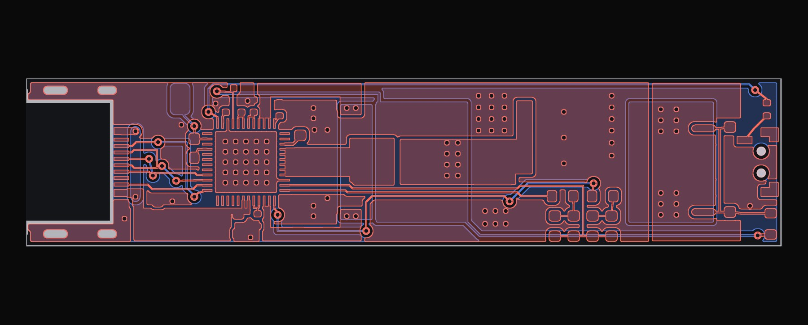
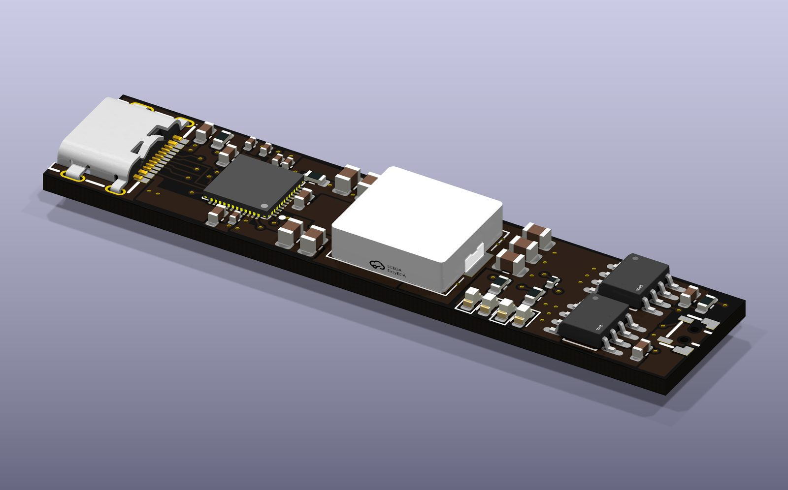
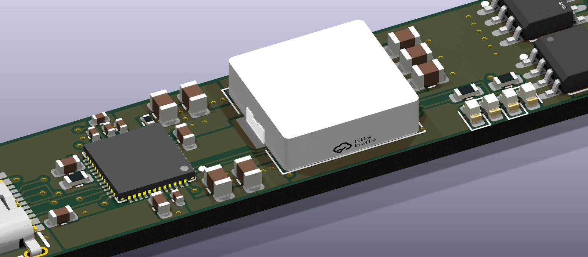

21700 1셀, USB-C PD 20W 보조배터리 보드입니다. Claude Code로 설계 자동화 환경을 만들었고, 부품 선정과 배치 기준, 검증은 직접 했습니다.
Claude Code 활용
2층 최종 기판 배선. 빨강: 윗면, 파랑: 아랫면
스위칭 전원은 AI가 가장 자주 틀리는 회로입니다. 리튬 배터리는 실수 하나가 화재로 이어집니다.
그래서 승압·충전·PD 회로를 새로 그리지 않았습니다. 보조배터리 전용 칩(IP5365)을 고르고, 제조사의 레퍼런스 회로를 그대로 따랐습니다. AI에게는 반복 작업을 맡기고, 판단이 필요한 곳은 직접 정했습니다.
AI가 그린 결과를 믿기보다,
확인할 수 있는 구조를 먼저 만들었습니다.
회로도 생성, 넷리스트 검증, PCB 생성, DRC, 제작 파일까지 스크립트로 묶었습니다. 첫 보드(4층)를 DRC 오류 0으로 완성했습니다.
부품을 다시 배치해 58.4×13mm로 줄였습니다. 폭 13mm는 USB-C 커넥터 다리 간격이 정하는 하한입니다.
단가를 낮추려고 2층으로 바꿨습니다. 배치와 배선을 처음부터 다시 하고, 회로 전체를 검토한 뒤 JLCPCB에 시제품을 주문했습니다.
시제품 생산이 끝났고, 실물 시험을 앞두고 있습니다.

1~2일차 4층 보드
2층 1차안은 4층 배치를 옮기고 자동 배선으로 DRC 오류 0, 미연결 0까지 만들었습니다. 검사는 통과했습니다.
그런데 배선을 직접 따라가 보니, 커패시터의 GND 전류가 IC까지 약 40mm를 돌아가고 있었습니다. 스위칭 노이즈를 키우는 구조입니다. 1차안을 버리고, 배치부터 처음부터 다시 해 손으로 배선했습니다.
2층 최종 배치. 위: 윗면, 아래: 아랫면
의도한 연결을 먼저 글로 적고, 만들어진 회로와 핀 하나하나를 비교했습니다. 26개 넷, 불일치 0.
IP5365의 48핀 전부를 데이터시트 핀 표와 맞춰 봤습니다. 이 과정에서 충전 IC의 만충 전압과 보호 IC의 차단 전압 범위가 겹치는 것을 찾아, 차단 전압이 더 높은 보호 IC로 바꿨습니다.
USB-C, 측면 버튼, 셀 연결 패드의 위치를 먼저 고정하고, 남은 공간 안에서 부품을 배치했습니다.
자동 배선(Freerouting)은 좁은 2층 기판에서 GND 면을 끊고 USB 신호를 잇지 못했습니다. 이 보드는 전부 손으로 배선했습니다.
100개와 500개는 JLCPCB 실견적입니다. 4,800개는 2×8 패널을 직접 만들어 견적을 냈습니다.
견적 화면 총액은 $44,999로 나왔습니다. 확인해 보니 패널 안의 16장을 한 번 더 곱한 오류였습니다. 이를 바로잡아 개당 약 $1.95를 얻었습니다.
| 수량 | 방식 | 개당 |
|---|---|---|
| 100개 | 단품, 실견적 | $3.52 |
| 500개 | 단품, 실견적 | $2.84 |
| 4,800개 | 2×8 패널, 실견적 + 보정 | 약 $1.95 |
조립 포함. 배송·관세 별도, SMT 조립비 일부 추정. 원가의 36%는 IP5365 칩 하나입니다.

충전과 방전, 발열, 만충까지 가는지 시제품으로 확인합니다. 다음 보드는 3S 45W 보조배터리입니다.